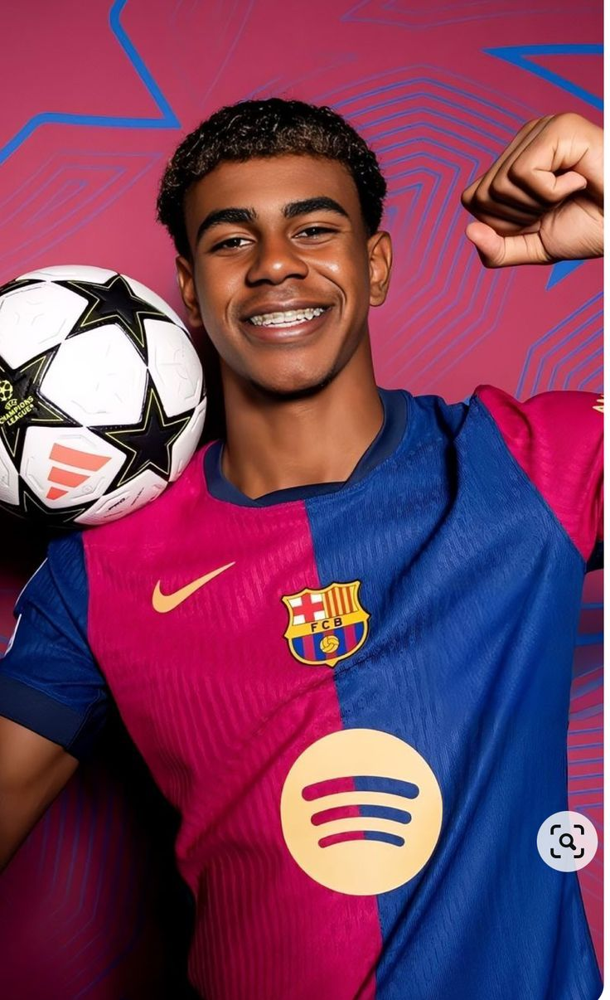

The Rise of Young Talents in Football
Over the past decade, young footballers have taken center stage, proving that age is just a number in the world of sports. From Mbappé to Pedri, the next generation is shaping football's future.
Read MoreOver the past decade, young footballers have taken center stage, proving that age is just a number in the world of sports. From Mbappé to Pedri, the next generation is shaping football's future.
Read MoreFootball tactics have evolved drastically over the years, with high-pressing, counter-attacking, and possession-based styles dominating today's game. Coaches are constantly innovating to gain the edge.
Read More.jpg)
From the 1954 World Cup Final to the 2005 Champions League miracle, some matches have gone down in history as the most unforgettable spectacles in football.
Read More